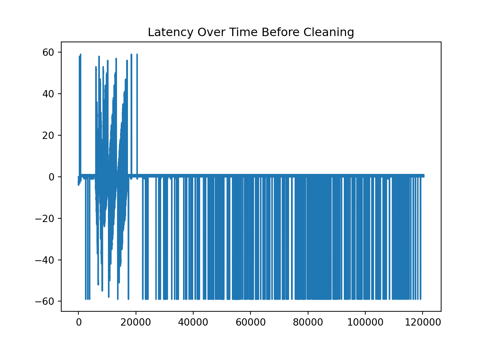
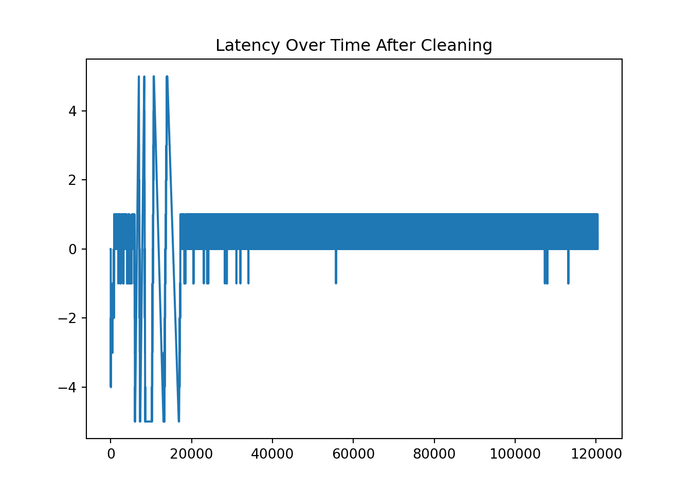

Note: 이 페이지는 키움 API를 통해 Real Time Tick Data를 받아온 후 데이터를 클리닝 하는 과정을 보여주고 있습니다. 오류 및 문의사항은 metrics@kakao.com 으로 메일주시면 감사하겠습니다
데이터 자체에 대한 질문과 데이터 제공에 관한 문의는 000 으로 메일 주시면 감사하겠습니다
R code 블럭과 Python code 블럭은 다음과 같이 색깔로 구분하겠습니다. 결과창은 동일하게 Ivory 색 블럭으로 표시됩니다.
# "이것은 R 코드 입니다."# "이것은 Python 코드 입니다."Package
library(dplyr)
library(tidyverse)
library(DT)
library(reticulate) # Python
#py_install(packages = "matplotlib")
#py_install(packages = "pandas")
#py_install(packages = 'dfply')
options(scipen=999)
options(max.print = 99999999)
options(digits=10)Import Data
- Check NA
wd = "G:/공유 드라이브/Project_TBD/Stock_Data/real_time/kiwoom_stocks/2021-01-14"
wd2 = "/Volumes/GoogleDrive/공유 드라이브/Project_TBD/Stock_Data/real_time/kiwoom_stocks/2021-01-14"
fn = list.files(path = wd2,
pattern = '.*stocks_trade.*\\.csv') # 마지막 30분 틱데이터 가지고오기
path = paste(wd2,fn,sep = '/')
# data = readr::read_csv(file = path,
# col_names = c('code','trade_date','timestamp','price','open','high','low',
# 'size','cum_size','ask1','bid1'))
tbl =
list.files(path = wd2, pattern = '.*stocks_trade.*\\.csv') %>%
map_df(~readr::read_csv(paste(wd2,.,sep = '/'),
col_names = c('code','trade_date','timestamp','price','open','high','low',
'size','cum_size','ask1','bid1') ))
sum(is.na(tbl))## [1] 0import numpy as np
import matplotlib.pyplot as plt
import pandas as pd
from datetime import datetime, timedelta
#py_install(packages = "matplotlib")
#py_install(packages = "pandas")
pd.options.display.float_format = '{:.4f}'.format
pd.set_option('display.max_rows', 100)
df_py = r.tbl
df_py.head()## code trade_date timestamp ... cum_size ask1 bid1
## 0 000990 100105.0000 20210114100105.3164 ... 679839.0000 60000.0000 59800.0000
## 1 000990 100105.0000 20210114100105.3164 ... 679798.0000 59900.0000 59800.0000
## 2 000300 100105.0000 20210114100105.3203 ... 97702.0000 791.0000 790.0000
## 3 000080 100105.0000 20210114100105.3711 ... 164732.0000 35950.0000 35900.0000
## 4 001630 100105.0000 20210114100105.5117 ... 108391.0000 127500.0000 127000.0000
##
## [5 rows x 11 columns]Contents
1. Filter for a certain Stocks [특정주식으로 필터링 하기]
- KOSPI Code for Samsung Electronics is ‘005930’
ss = df_py[df_py.code == '005930'].reset_index(drop=True)
ss.shape## (120366, 11)2. Use time object in python
Delete rows where “second” does not lie between 0 and 59.
Substring the timstamp to get each time component.
ss = ss[ss['timestamp'].apply(lambda x: int(str(int(x*1000000))[12:14])) < 60 ]
ss = ss.assign( microsecond = ss['timestamp'].apply(lambda x: str(int(x*1000000))[14:20]),
second = ss['timestamp'].apply(lambda x: str(int(x*1000000))[12:14]),
minute = ss['timestamp'].apply(lambda x: str(int(x*1000000))[10:12]),
hour = ss['timestamp'].apply(lambda x: str(int(x*1000000))[8:10]),
day = ss['timestamp'].apply(lambda x: str(int(x*1000000))[6:8]),
month = ss['timestamp'].apply(lambda x: str(int(x*1000000))[4:6]),
year = ss['timestamp'].apply(lambda x: str(int(x*1000000))[0:4]),
kw_time = ss['trade_date'].apply(lambda x: str(int(x))))
ss.head()## code trade_date timestamp price ... day month year kw_time
## 0 005930 100105.0000 20210114100105.7930 89500.0000 ... 14 01 2021 100105
## 1 005930 100105.0000 20210114100105.8438 89600.0000 ... 14 01 2021 100105
## 2 005930 100106.0000 20210114100106.0195 89600.0000 ... 14 01 2021 100106
## 3 005930 100106.0000 20210114100106.0195 89500.0000 ... 14 01 2021 100106
## 4 005930 100106.0000 20210114100106.1836 89600.0000 ... 14 01 2021 100106
##
## [5 rows x 19 columns]- Transform to python datetime!
ss['time'] = ss.apply(lambda x: datetime(
year = int(x['year']),
month = int(x['month']),
day = int(x['day']),
hour = int(x['hour']),
minute = int(x['minute']),
second = int(x['second']),
microsecond = int(x['microsecond'])), #.strftime("%H:%M:%S.%f")[:-3],
axis=1)
ss.head(10)## code trade_date ... kw_time time
## 0 005930 100105.0000 ... 100105 2021-01-14 10:01:05.793536
## 1 005930 100105.0000 ... 100105 2021-01-14 10:01:05.842688
## 2 005930 100106.0000 ... 100106 2021-01-14 10:01:06.018816
## 3 005930 100106.0000 ... 100106 2021-01-14 10:01:06.018816
## 4 005930 100106.0000 ... 100106 2021-01-14 10:01:06.182656
## 5 005930 100106.0000 ... 100106 2021-01-14 10:01:06.338304
## 6 005930 100106.0000 ... 100106 2021-01-14 10:01:06.366976
## 7 005930 100106.0000 ... 100106 2021-01-14 10:01:06.678272
## 8 005930 100106.0000 ... 100106 2021-01-14 10:01:06.805248
## 9 005930 100106.0000 ... 100106 2021-01-14 10:01:07.264000
##
## [10 rows x 20 columns]- Calculate the latency
ss['kwtime'] = ss.apply(lambda x: datetime(year = int(x['year']),
month = int(x['month']),
day = int(x['day']),
hour = int(x['kw_time'][0:2]),
minute = int(x['kw_time'][2:4]),
second = int(x['kw_time'][4:6])),
axis = 1
)
ss['latency'] = ss.apply(lambda x: x['kwtime'].second - x['time'].second,
axis =1
)
ss1 = ss[['time', 'kwtime', 'hour', 'minute', 'second', 'price','size','ask1','bid1','latency']]
ss1.head(10)## time kwtime ... bid1 latency
## 0 2021-01-14 10:01:05.793536 2021-01-14 10:01:05 ... 89500.0000 0
## 1 2021-01-14 10:01:05.842688 2021-01-14 10:01:05 ... 89500.0000 0
## 2 2021-01-14 10:01:06.018816 2021-01-14 10:01:06 ... 89500.0000 0
## 3 2021-01-14 10:01:06.018816 2021-01-14 10:01:06 ... 89500.0000 0
## 4 2021-01-14 10:01:06.182656 2021-01-14 10:01:06 ... 89500.0000 0
## 5 2021-01-14 10:01:06.338304 2021-01-14 10:01:06 ... 89500.0000 0
## 6 2021-01-14 10:01:06.366976 2021-01-14 10:01:06 ... 89500.0000 0
## 7 2021-01-14 10:01:06.678272 2021-01-14 10:01:06 ... 89500.0000 0
## 8 2021-01-14 10:01:06.805248 2021-01-14 10:01:06 ... 89500.0000 0
## 9 2021-01-14 10:01:07.264000 2021-01-14 10:01:06 ... 89500.0000 -1
##
## [10 rows x 10 columns]3. Calculate latency and clean it [레이턴시 계산 및 정리]
*Calculate the latency by substracting the tiem provided by Kiwoom dataset and self-recorded time at the moment of processing the data delivered through the Kiwoom API.
# Task 2 & 3
print(ss1.latency.value_counts())## 0 85028
## 1 22814
## -1 861
## -2 707
## -3 421
## ...
## -55 5
## 57 4
## 54 3
## -52 2
## 38 2
## Name: latency, Length: 113, dtype: int64print(ss1.latency.nsmallest(10))## 2518 -59
## 3233 -59
## 3868 -59
## 13691 -59
## 13692 -59
## 13693 -59
## 13694 -59
## 13695 -59
## 17413 -59
## 22419 -59
## Name: latency, dtype: int64print(ss1.latency.nlargest(10))## 703 59
## 704 59
## 705 59
## 706 59
## 707 59
## 708 59
## 709 59
## 18443 59
## 20431 59
## 20432 59
## Name: latency, dtype: int64plt.plot(ss1.latency)
plt.title('Latency Over Time Before Cleaning')
- Check the time where large discrepancy happened!
- It turns out that when the second of time equal 59, it has large latency. It might not be case for the other day, which has to be checked.
When latency is -59, it actually is 1 second difference
ss1[ss1.latency == -59][['kwtime','hour','minute','second','latency']]## kwtime hour minute second latency
## 2518 2021-01-14 10:08:00 10 07 59 -59
## 3233 2021-01-14 10:10:00 10 09 59 -59
## 3868 2021-01-14 10:12:00 10 11 59 -59
## 13691 2021-01-14 10:38:00 10 38 59 -59
## 13692 2021-01-14 10:38:00 10 38 59 -59
## ... ... ... ... ... ...
## 118298 2021-01-14 15:18:00 15 17 59 -59
## 118299 2021-01-14 15:18:00 15 17 59 -59
## 119234 2021-01-14 15:19:00 15 18 59 -59
## 119235 2021-01-14 15:19:00 15 18 59 -59
## 119236 2021-01-14 15:19:00 15 18 59 -59
##
## [384 rows x 5 columns]When latency is 59, it actually is 1 second difference
ss1[ss1.latency == 59][['kwtime','hour','minute','second','latency']]## kwtime hour minute second latency
## 703 2021-01-14 10:02:59 10 03 00 59
## 704 2021-01-14 10:02:59 10 03 00 59
## 705 2021-01-14 10:02:59 10 03 00 59
## 706 2021-01-14 10:02:59 10 03 00 59
## 707 2021-01-14 10:02:59 10 03 00 59
## 708 2021-01-14 10:02:59 10 03 00 59
## 709 2021-01-14 10:02:59 10 03 00 59
## 18443 2021-01-14 10:47:59 10 48 00 59
## 20431 2021-01-14 10:52:59 10 53 00 59
## 20432 2021-01-14 10:52:59 10 53 00 59
## 20433 2021-01-14 10:52:59 10 53 00 59
## 20434 2021-01-14 10:52:59 10 53 00 59
## 20435 2021-01-14 10:52:59 10 53 00 59- Delete where time difference goes beyond one second between Kiwoom api time and self-recorded time. In other words, we allow latency +/- five second at maximum.
ss2 = ss1[abs(ss1.latency) <=5]
print(ss2.latency.value_counts())## 0 85028
## 1 22814
## -1 861
## -2 707
## -3 421
## -4 369
## -5 271
## 4 157
## 2 148
## 5 146
## 3 131
## Name: latency, dtype: int64plt.plot(ss2.latency)
plt.title('Latency Over Time After Cleaning')
4. Get Trade Direction Indicator
If price is large than midprice, then it is buyer-initiated. If price is less than midprice, then it is seller-initated. It is tricky if price is same as midprice. In that case, we use the following rule.
The tick rule is the most commonly used level-1 algorithm. This rule is rather simple and classifies a trade as buyer-initiated if the trade price is above the preceding trade price (an uptick trade) and as seller-initiated if the trade price is below the preceding trade price (a downtick trade). If the trade price is the same as the previous trade price (a zero-tick trade), the rule looks for the closest prior price that differs from the current trade price. Zero-uptick trades are classified as buys, and zero-downtick trades are classified as sells.
The rule above can be simply implemented through the code below.
ss = ss.assign(spread = ss['ask1'] - ss['bid1'],
mid = (ss['bid1'] + ss['ask1'])*.5,
ind = 0,
price1 = ss['price'].shift(1, fill_value=0),
price2 = ss['price'].shift(2, fill_value=0)
)
buy = ((ss['price'] > ss['mid']) |
((ss['price'] == ss['mid']) & (ss['price'] > ss['price1'])) |
((ss['price'] == ss['mid']) & (ss['price'] == ss['price1']) & (ss['price'] > ss['price2'])))
ss.loc[buy, 'ind'] = 1
ss.loc[~buy, 'ind'] = -1
ss1 = ss[['time', 'price','size','ask1','bid1','ind','spread']]
ss1.head(5)## time price size ... bid1 ind spread
## 0 2021-01-14 10:01:05.793536 89500.0000 7.0000 ... 89500.0000 -1 100.0000
## 1 2021-01-14 10:01:05.842688 89600.0000 6.0000 ... 89500.0000 1 100.0000
## 2 2021-01-14 10:01:06.018816 89600.0000 10.0000 ... 89500.0000 1 100.0000
## 3 2021-01-14 10:01:06.018816 89500.0000 44.0000 ... 89500.0000 -1 100.0000
## 4 2021-01-14 10:01:06.182656 89600.0000 10.0000 ... 89500.0000 1 100.0000
##
## [5 rows x 7 columns]We will discuss what to do more with using trading indicator value along with other variables extracted from tick data.
Source
- 데이터 provided by 00 Team
- http://dee.uib.es/digitalAssets/234/234006_Pascual.pdf